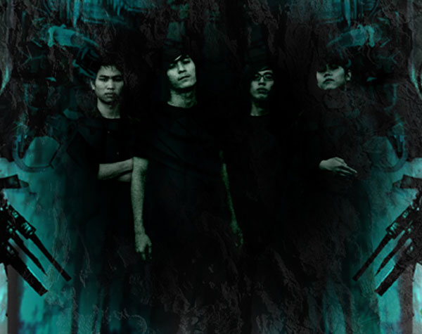

Solid Core หรือ โซลิดคอร์เป็นวง metalcore จากเชียงใหม่ ก่อตั้งในปี 2006 เซ็นสัญญากับค่าย Day One Records และยัง active อยู่ Solid Core ได้ปล่อยผลงานออกมา 2 ผลงาน คือ มินิอัลบั้ม โหย (2006) และ EP ไม่มีสิ่งใดที่มันแน่นอน (2022)
คำโปรยบน dayone-records.com จาก archive.org
ทั้ง 4 รวมตัวกันเมื่อต้นปี 2006 โดย จาตุรนต์ และ ยุทธพงศ์ ซึ่งต่อมาทั้งสองได้พบกับ สันติภาพ โดยบังเอิญสมัยที่เรียนมัธยมและต่อมาได้พบกับอวิรุทธิ์ ซึ่งทำให้กลายมาเป็น SolidCorE ในที่สุด... เพียงแค่ 20 ปี บนโลกใบนี้ พวกเขาก็เกิดความรู้สึกกับสิ่งที่ต้องเผชิญ...ไม่ว่าจะเป็นสังคม.. ความรัก..ความผิดหวัง..ความโหยหา..ความฟุ้งซ่าน ที่แสดงภาพลบของคนออกมาให้เห็น... ในเวลาที่ผ่านไป...ยังเป็นภาพที่แสดงถึงจิตใจของมนุษย์ในด้านมืด...ที่สร้างความอึดอัดและปัญหา.. Solid CorE สะท้อนความรู้สึกด้านลึกของจิตใจกับสิ่งเหล่านั้น ผ่านสิ่งที่พวกเขาชอบ ...ผ่านดนตรีเมทัล ที่พวกเขาคิดว่าเป็นทางเดียว และชัดเจนและตอบสนองพวกเขาได้...
members

กิฟ (Gift) จาตุรนต์
position: guitarist

ตั๊ก (Thug) สันติภาพ
position: lead singer

อ๊อฟ (Aof) ยุทธพงศ์
position: bassist

บาส (Bas) อวิรุทธิ์
position: drummer
คำโปรยบน myspace.com/solidcore2006 จาก archive.org
‘Solid Core’ was informally born in 2006 from the pressure of advanced media interaction, fast changing society, uncertain love and so on around human beings facing in everyday life. Most of the pressure causes problems and brings us gradually down to the pessimistic point of view towards the environment. However, human being’s mind is the controller. It is believed that only the tense of our mind can be released and expressed out with the hard and tough music. Metal music reflects our emotion. It can tell what is going on in our heart from the genius metal music players. Heavy with time to time sweet mixing rhythm represents the uniqueness of the genuine metal music taste. Four members of the ‘Solid Core’ band share the fun of hard metal music, the dream of rockers. ‘Gift’, the original establisher and guitar player of the band, with ‘Aof’, the dead buddy and base player ready to die for metal music have shaked hands to create their own metal band. They asked ‘Bas’, buddy music player from ‘Opportunity’ band to jam the dammed metal music. Fortunately, ‘Solid Core’ has become stronger and stronger since it has ‘Thug’, from the same high school, to empower the band with his metal voice. And later, ‘Aey’ discovered to be good at metal drum joined the band. To big brother "Gu" of Gu Club Underground in Chiangmai, Solid Core has proposed themselves as a new metal band and a part of metal groups help release anyone from tense emotion Here is the debut EP.from us. Check it out on Oct10,2007